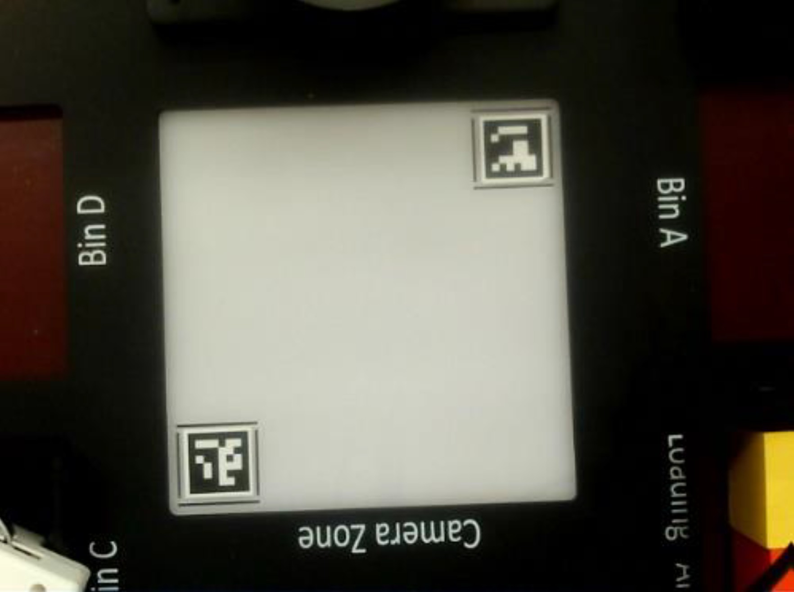
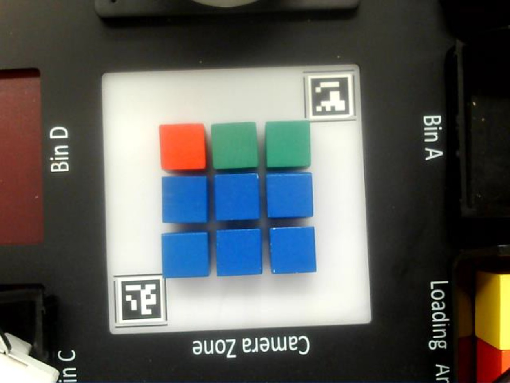
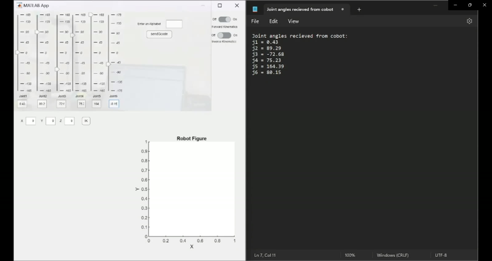
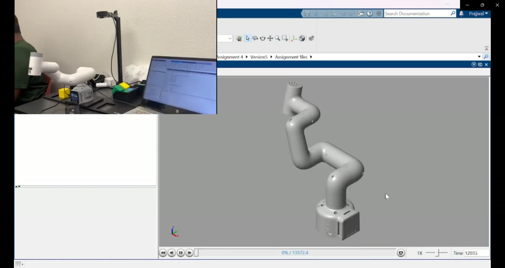
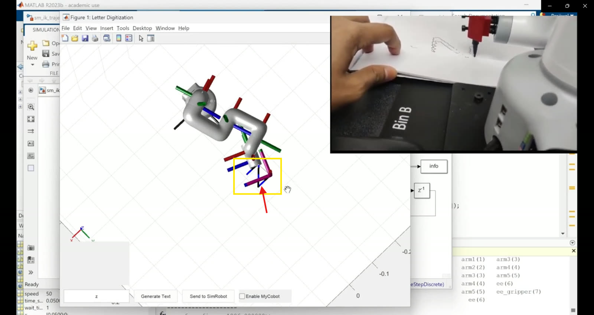

Tic-Tac-Toe Against a Robot That Watches the Board
I got two things working on one small desktop arm. The first is a tic-tac-toe opponent. A camera calibrated with ArUco markers watches the board, color segmentation figures out which block sits in which cell, alpha-beta search picks the best reply, and a suction pump puts the robot's piece down. The second is a MATLAB digital twin, where a URDF model and Simulink inverse kinematics write letters in simulation and on the real arm at the same moment, with the joint angles streamed over serial.
I wanted a $700 arm to see, decide and play.
Most desktop cobot demos just replay waypoints someone taught them. I wanted the whole loop on an Elephant Robotics MyCobot 280M5: see the world, make a decision, then move, with a real person sitting across as the opponent. Tic-tac-toe turned out to be the perfect size. It's small enough to solve exactly, but every turn still needs a real read of the board, a mapping from camera to table, and a precise pick and place.
After that, the same arm got a second project: a digital twin that writes letters. MATLAB plans the path, a URDF model follows it in simulation, and the exact same joint angles go over serial to the real arm, so both pens move together.
Two ArUco markers turn pixels into millimeters.
The camera is mounted above the play area, looking down at a 3×3 grid with labeled bins for spare blocks on either side. Two ArUco markers at opposite corners of the camera's view anchor the calibration. Because I know where they are in the real world, every pixel maps to a spot on the board and every block it spots lands in the right cell. Color handles the rest. Each block is sorted by hue, with blue as the person's X and green as the robot's O.


The robot never guesses its move. It searches for it.
prune when α ≥ β alpha-beta skips branches the opponent would never allow
Once it has read the board, a minimax search with alpha-beta pruning looks through the rest of the game tree and returns the strongest reply. So the robot actually plays with a strategy instead of grabbing the first empty cell, and it holds its own even when it moves second. On a 3×3 board the search is exact, so the robot never makes a mistake. The best a person can do is force a draw.
The chosen cell then becomes somewhere to move. Inverse kinematics turns the cell's real-world position into joint angles, the single-head suction pump picks up a green block from the bin, and the move lands on the board. The player sees the result right away from the camera feed and the arm itself, and the only other interface is a prompt in the terminal.
One path, two robots, and only one of them is real.
For the second project I rebuilt the MyCobot as a URDF rigid-body model in MATLAB using the Robotics System Toolbox. A MATLAB app takes a letter, turns its shape into waypoints, runs them through a Simulink inverse kinematics model, and sends the joint angles out over serial. The simulated arm and the real arm make the same motion at the same time, and they finish by both drawing the letter Z.



Watch it play.
What I took away from it.
Perception was most of the work. The game logic is a textbook algorithm. Getting a camera to reliably tell a blue cube from a green one as the lighting changes, and put it in the right cell every single time, is where the real engineering went, and two ArUco markers did more for reliability than any amount of color tuning. I also stopped thinking of a digital twin as a pretty render. It's really a shared stream of commands. The letter demo works because the simulation and the hardware read exactly the same joint angles, so what you see in MATLAB is what actually went down the serial cable. And people connect with robots they can play with. Both demos run on the same IK and serial code, but the one where a person can't beat the robot at tic-tac-toe is the one everyone remembers.